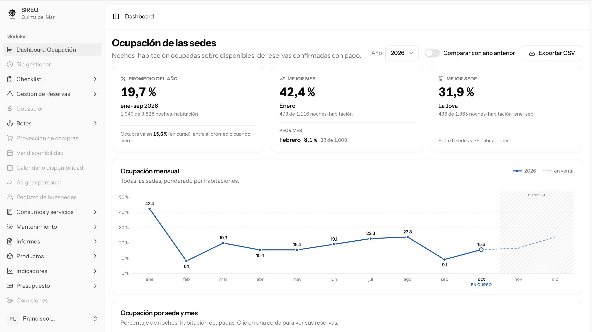
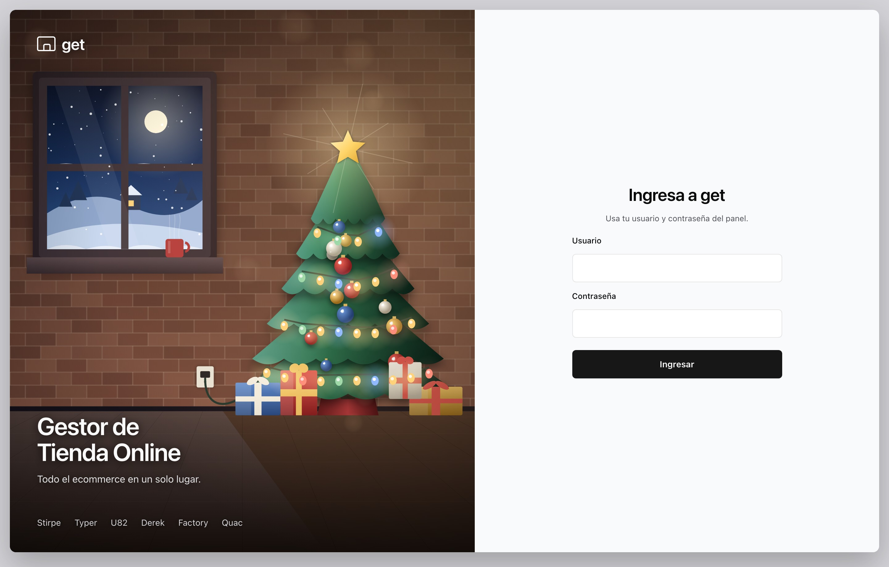
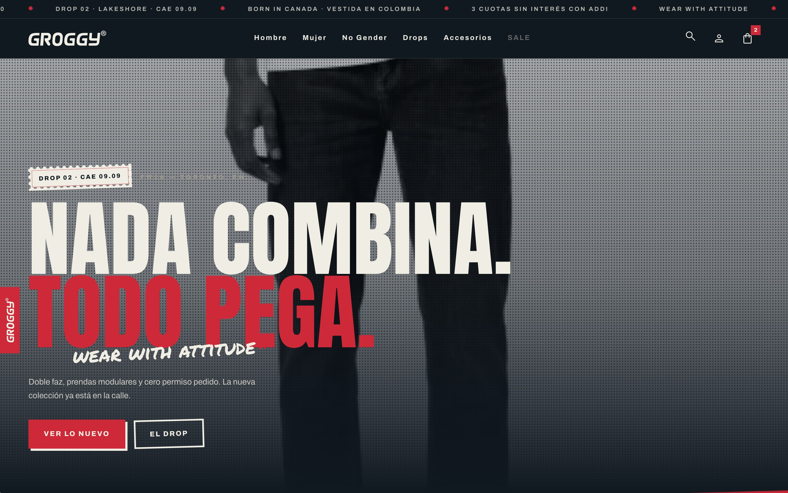
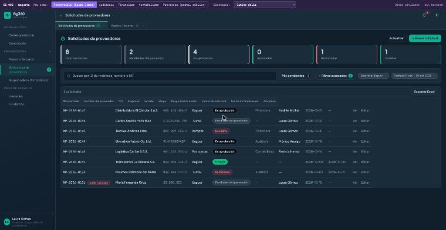
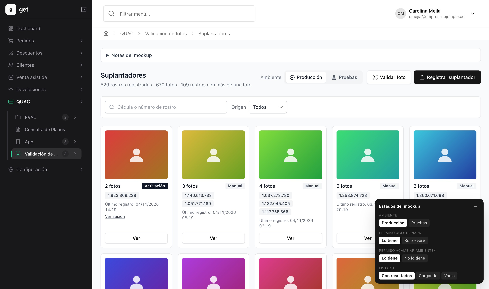
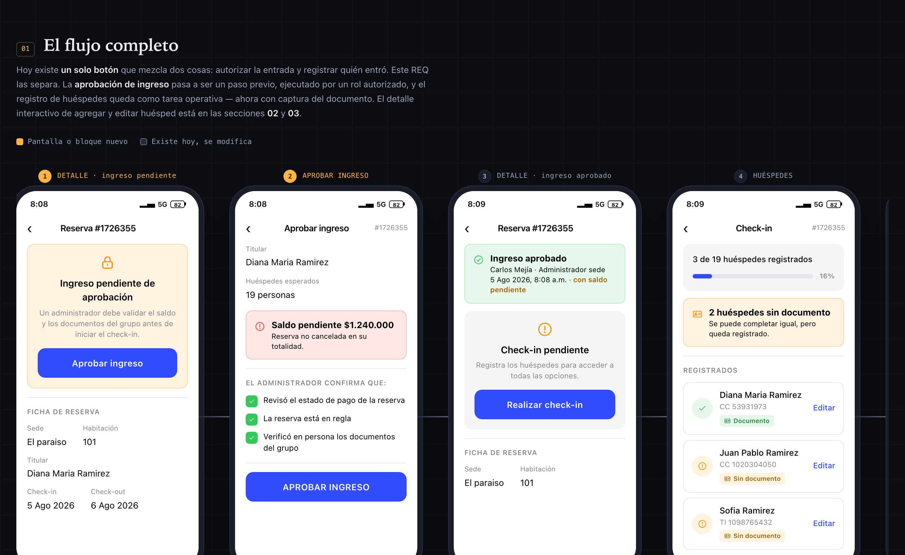
Del legacy a
sistemas nuevos
Siete productos construidos con un marco propio de desarrollo con IA
por fase
Desarrollo con IA
Método propio, ya publicado para el equipo
- 14 contratos de fasesirven con Claude, Codex u otro modelo
- 5 agentes por rolejecutor · 2 revisores · auditor · buscador
- Verificaciónpruebas por task · prueba en pantalla · PROD solo lectura
- En uso en 4 workspacesecommerce · Quinta · App Quac · BG360
- Equiporepo en GitHub 4 nov · usuario BD por developer · herdr
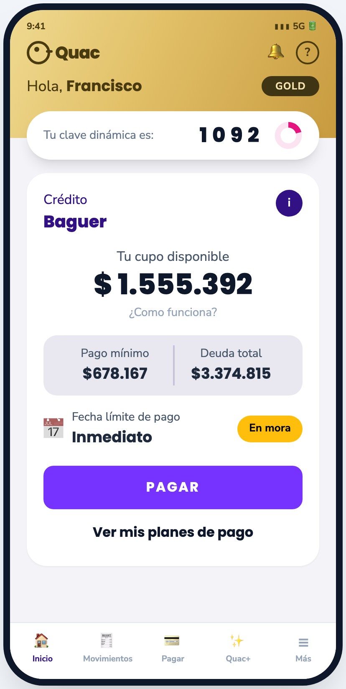
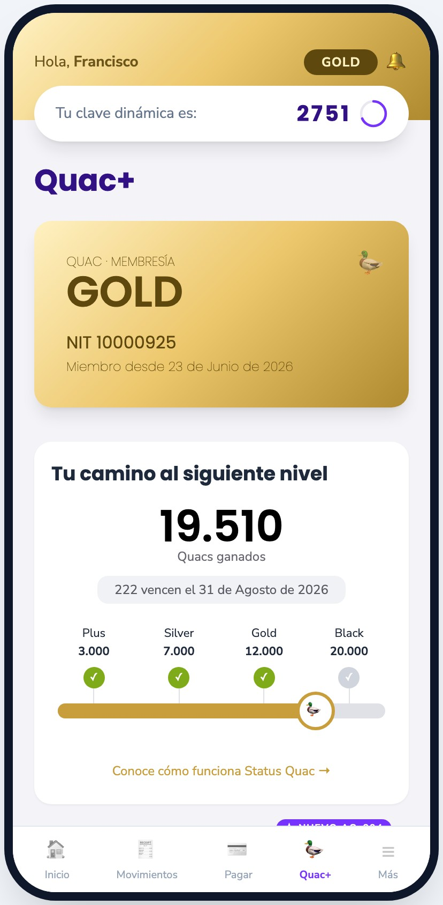
La app QUAC, reconstruida
Mismas pantallas, esqueleto nuevo · Flutter + Laravel 12 · Status Quac integrado
- 18 REQ hechoshome, clave dinámica, Quac+, dispositivos, avisos remotos, tutorial
- 2 en cursoAQ-005 Pagos · AQ-013 Cargar documentos
- 1 pendienteAQ-010 salida a tiendas: stores, tokens y DNS
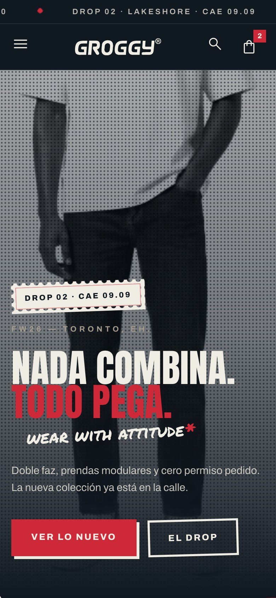
groggy.com.co
Tienda propia de streetwear, mobile first, sobre get-api
- 14 REQ en roadmapGR-001 registrar la tienda: 15 de 18 tasks
- PantallasGR-002 a GR-012 pendientes
- Infra y salidaGR-013 y GR-014 go-live
Talla M · $159.900
Vender por WhatsApp en STIRPE
Un orquestador y 4 agentes: comercial, personal shopper, cierre y servicio
- 22 toolscatálogo, stock, carrito, cuotas Quac, link de pago, pedido, PQR
- Recomendados en masterGW-174 · 174-1 más vendidos · GW-175 vitrina
- Venta cruzadaGW-198 medias con tenis · complementos por facturas
- Servicios en get-apiBOT-VENTAS-001 spec aprobada · se entregan como colección Postman
- Hoyel bot corre con catálogo simulado
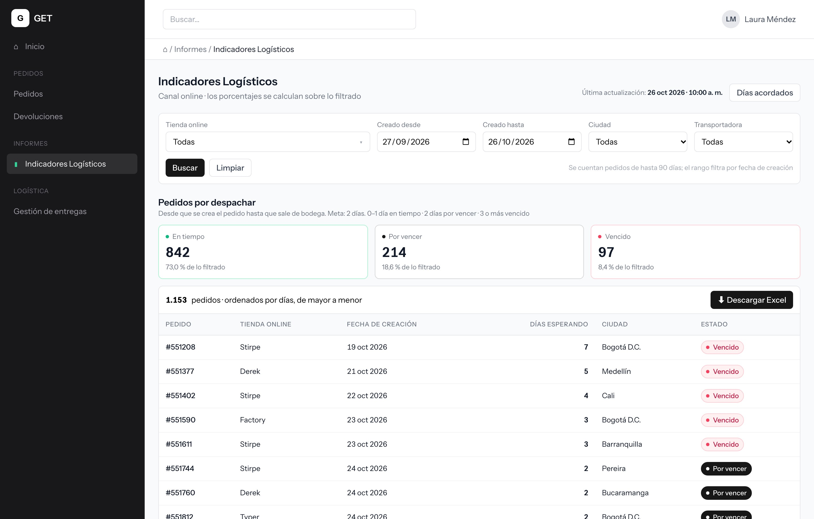
Migración de cms y labs a GET
Un solo sistema para tiendas, logística, soporte y promociones
- cms-stirpe →logística, pedidos, promociones, tipos de prenda, abonos
- labs →validación y gestión de fotos, link de crédito, suplantadores
- ERP →campañas de Customer Retention, solo lectura
- En PROD estas 2 semanasmenú en 3 niveles · link de crédito · campañas ERP · login por temporada
Cinco roadmaps, 36 requerimientos
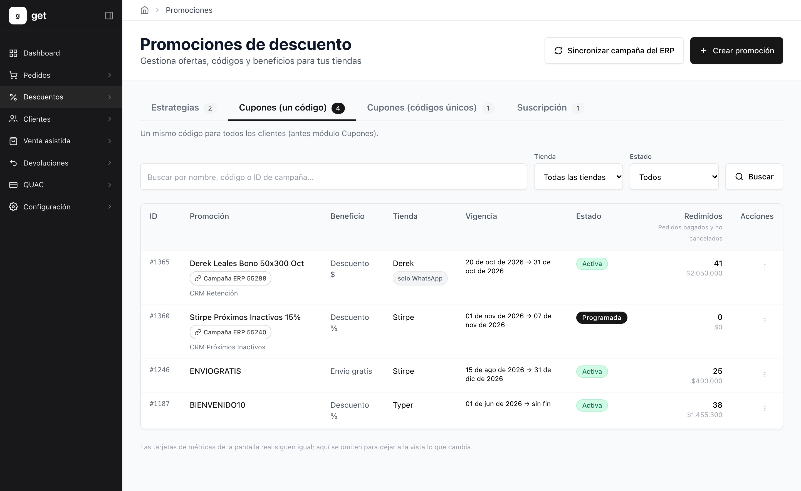
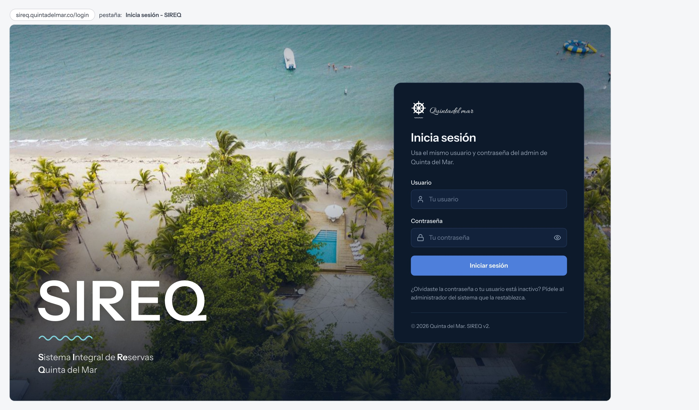
Del admin legacy a SIREQ
Migración módulo por módulo, sin big bang, sobre las mismas tablas
- Reservas6 hechos: ficha, wizard, firma por WhatsApp, cruces
- Login y dashboardportada SIREQ y ocupación de las sedes
- Checklist de sede3 hechos, ya en producción
- Inventario5 de 15: stock, kardex, bodegas, traslados
- Pendientecartera y resto de reservas (Tren B)
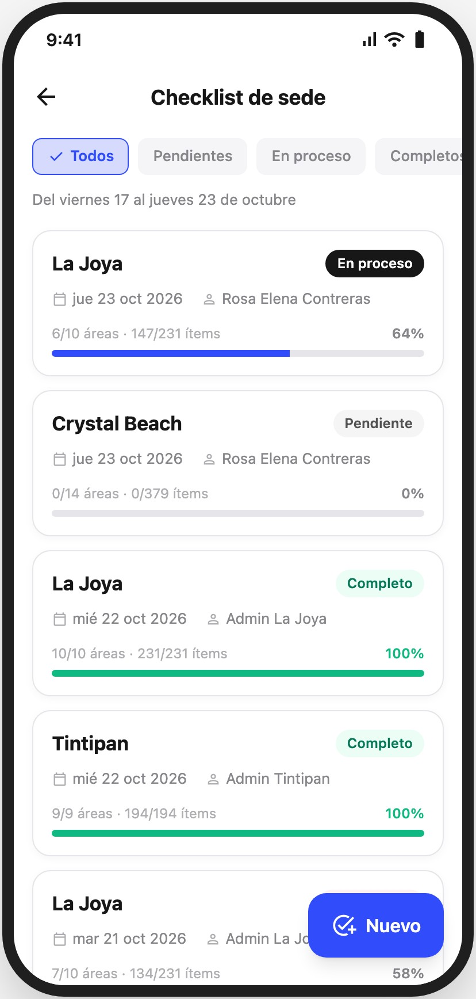
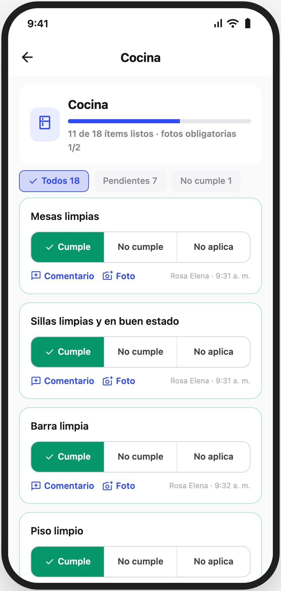
Checklist de sede
El administrador recorre la sede y responde por área, con foto
- REQ-056 apphecho 20 oct · falta la versión iOS
- REQ-057 adminen producción
- REQ-057-1solo se exige el día de check-in de una reserva nueva


Traslados entre bodegas
La sede ve lo que le llega y confirma lo que recibió
- REQ-061confirmar ya no revive traslados anulados · hecho
- REQ-065traslados en el admin · QA 3 nov
- REQ-066recibir con faltantes y nota · mockup listo
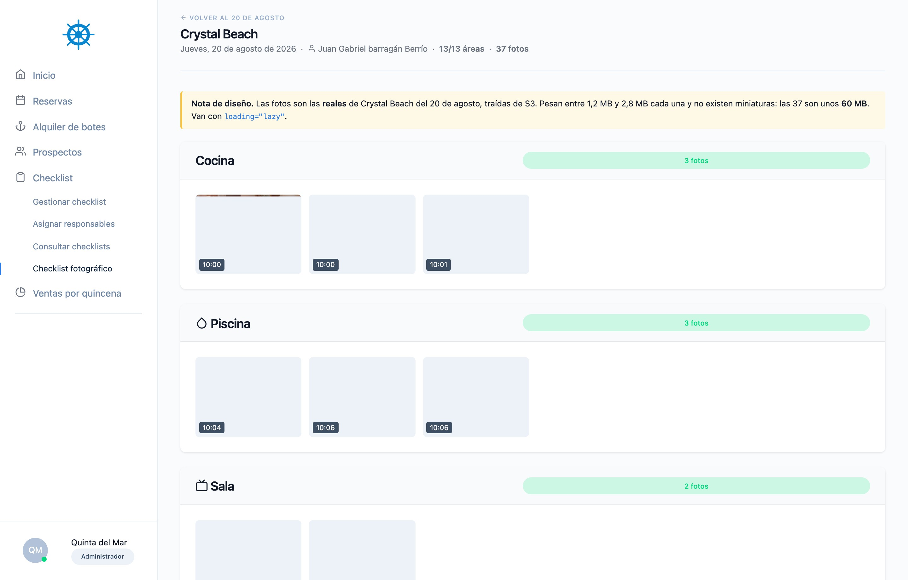
Checklist fotográfico
Las fotos que toma la sede se consultan por día en el admin
- REQ-039 appcorrección lista · falta PR y despliegue
- REQ-040 admincalendario y detalle por sede · auditado APPROVED
Aprobar ingreso y check-in
Separa autorizar la entrada de registrar a los huéspedes
- REQ-036spec aprobada
- Qué cambiaun rol autorizado aprueba el ingreso; se captura el documento de cada huésped
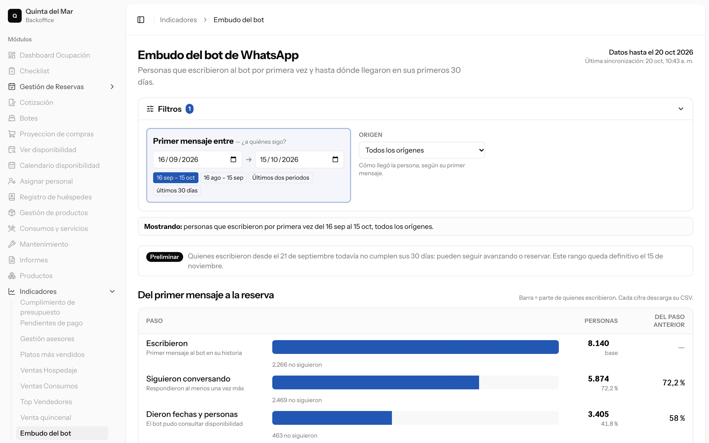
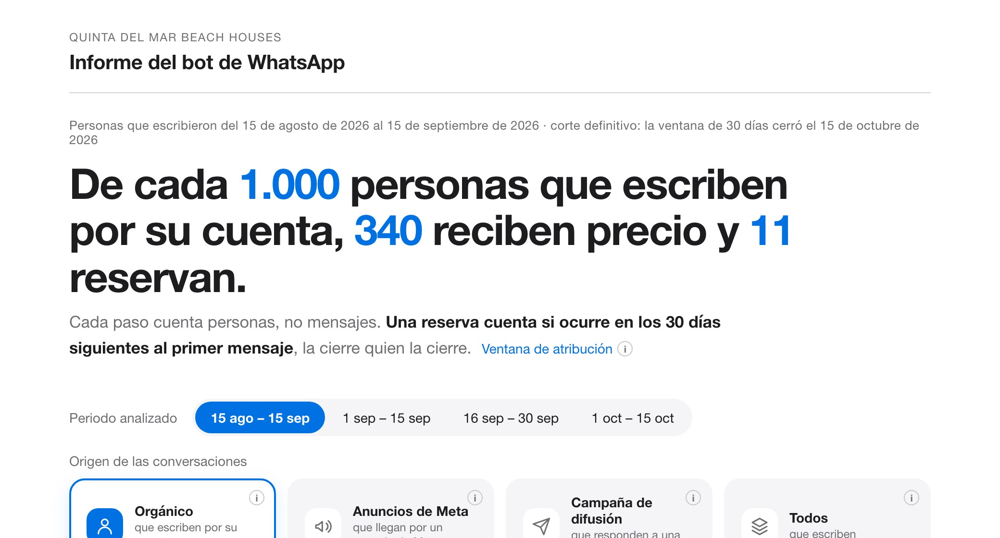
Bot de WhatsApp y su embudo
Atiende, cotiza sedes y pasadías, y pasa a una asesora cuando hace falta
- Volumen563 mil mensajes desde abril · 34.550 personas · ≈600 al día
- Embudo orgánico 15 ago–15 sepde cada 1.000 que escriben, 340 reciben precio y 11 reservan
- 83 reservasatribuidas al bot entre el 15 ago y el 15 oct
- REQ-060el embudo dentro del admin · spec aprobada 20 oct
- 26 oct4 incidentes corregidos y primera suite de pruebas
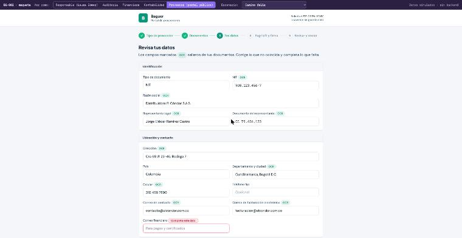
Maestro de proveedores
El proveedor se inscribe solo y la solicitud pasa por 4 aprobaciones hasta crear el tercero en BG360
- Portal del proveedorRUT y documentos con lectura OCR · firma Sagrilaft
- Aprobacionesresponsable · auditoría · financiera · contabilidad
- Estado26 decisiones cerradas · maqueta navegable lista
- BG-001mesa de servicio, entregado en agosto